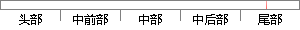

suspend_task(6);
片段位置图

相似结果
相似片段： @@ -253,6 +256,7 @@ } while_each_thread(g, p);read_unlock(&tasklist_lock); + suspend_task = 0; printk( " done\n" ); MDELAY(500);...
| 标题 | 《Linux-kernel mailing list archive 2003-11,: Re: [PATCH] Don't...》 |
| 对比库 | PaperRater云论文库 |
| 网址 | http://www.cs.helsinki.fi/linux/linux-kernel/2003-11/0428.html |
| 相似率 | 100% （严重抄袭） |